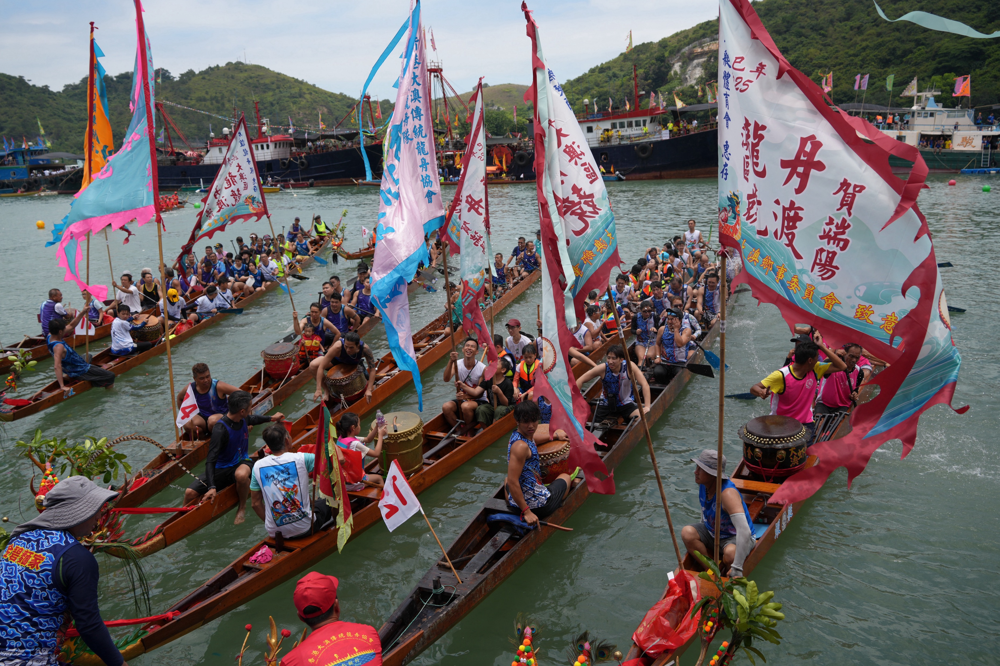
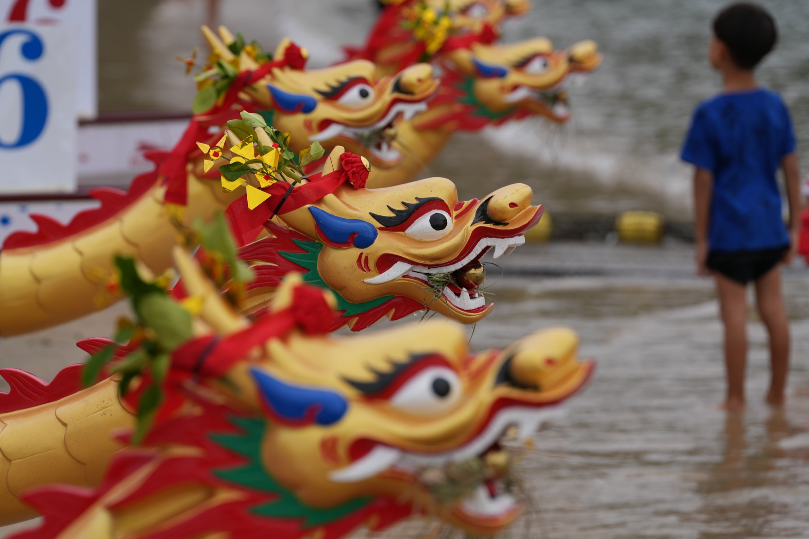

鼓聲震天，槳影破浪。傳承千年龍舟文化，推廣龍舟運動，凝聚社區力量。
龍舟是端午節用來競渡的龍形船，船身狹長，船頭飾有龍頭，船尾飾有龍尾。每逢端午，江河之上百舸爭流，鑼鼓齊鳴，是中華民族最具代表性的傳統民俗活動之一。

龍舟競渡的起源，民間流傳最廣的說法是為了紀念愛國詩人屈原。相傳屈原於五月初五投汨羅江殉國，百姓聞訊後划船打撈，並投粽子入江以免魚蝦傷其身軀，日後逐漸演變成端午賽龍舟的習俗。
除紀念屈原外，部分地區亦有紀念伍子胥、曹娥等說法。不論起源為何，龍舟早已超越單純的祭祀意義，成為一種凝聚鄉里、奮發向上的文化象徵。
2010年，龍舟成為廣州亞運會正式比賽項目；2021年，東京奧運會將龍舟列為展示項目。這項千年傳統正走向世界舞台。
龍舟的歷史可追溯至春秋戰國時期，歷經數代演變，從原始的祭祀活動發展為今日的國際體育賽事。
傳統龍舟以整木雕刻而成，需經過選材、伐木、放樣、組船、捻縫、上漆、繪鱗等十餘道工序。每個部件都有其獨特作用，缺一不可。

大多用整木雕成，造型威武，顏色有紅、黑、灰等，均與龍燈之頭相似。競渡前需舉行祭龍頭儀式，為龍舟開光點睛。
狹長細窄，傳統以杉木或柚木製成，現代競技龍舟則使用玻璃鋼材質。船身繪有龍鱗紋樣，色彩鮮艷。
船尾雕刻成龍尾形狀，高高翹起，與龍頭呼應。部分地區龍尾還會插上彩旗或令旗，增添氣勢。
鼓手坐於船頭，鑼手坐於船中，以鼓點節奏統一划手動作。「鼓令」是龍舟的靈魂，快慢急緩指揮全船。
划手手持木槳或碳纖維槳，以坐式或跪式入水划行。整齊劃一的槳法是龍舟速度的關鍵。
舵手位於船尾，負責控制方向。傳統龍舟用長舵，競技龍舟用短舵，舵手的技術直接影響航線與速度。
龍舟是講求團隊默契的運動，從體能到技術，從個人到團隊，每一環都需要刻苦訓練。以下是山谷聯龍舟隊的日常訓練體系。
山谷聯龍舟隊定期舉辦各類活動，無論你係新手定係老手，都可以搵到適合自己嘅參與方式。一齊落水，感受槳影破浪嘅快感！
活動表格無法在頁內預覽
飛書表格受跨域限制，請點擊下方按鈕前往飛書查看最新活動安排。
透過鏡頭，記錄龍舟人每一個奮勇爭先嘅畫面。由比賽現場到日常訓練，由清晨到黃昏，每一格都係汗水與熱誠。
龍舟承載著千年華夏文化，由祭祀到競技，由團隊精神到社區凝聚，每一項習俗都有深厚嘅文化底蘊。
競渡前舉行隆重嘅祭龍頭儀式，由長者為龍頭點睛，祈求風調雨順、出入平安。係龍舟文化最神聖嘅一環。
比賽過後，鄉親父老齊集祠堂前擺席，共進「龍舟飯」。寓意吃了龍舟飯，身體健康、龍精虎猛。
東莞一帶嘅「趁景」習俗，龍舟在江面相遇自發切磋競速，不設名次，聚散自由，盡顯鄉里情誼。
一眾龍舟愛好者，同心協力，破浪前行。滑鼠懸停可暫停滾動。
※ 會員名單喺飛書表格度管理，加減會員後話我知，我幫你同步到網頁